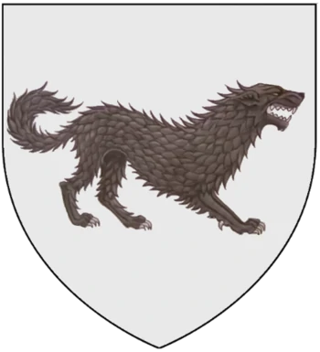

La Casa Stark
Buena parte de miembros de la Casa Stark son descritos con caras alargadas, de constitución física delgada, con el cabello castaño oscuro y los ojos grises. Algunos de sus miembros son conocidos por su melancolía y frialdad, mientras que otros tienen un carácter asalvajado, a veces denominado "de la sangre de lobo". En la actual generación de miembros de la Casa Stark, varios de sus miembros poseen la habilidad de entrar en la piel de sus lobos huargo, dándoles la capacidad como wargs de experimentar los sentimientos de estos animales, y de ver a través de su ojos. Esto suele ocurrir con mayor frecuencia a la hora de dormir y de forma inconsciente, aunque también son capaces de hacerlo voluntariamente cuando están despiertos también, a voluntad, una vez que son más practicados.
Contamos con 6 hermanos:
- Robb Stark
- Sansa Stark
- Jon Snow (hijo bastardo)
- Arya Stark
- Bran Stark
- Rickon Stark